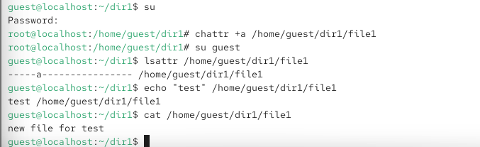

Получение практических навыков работы в консоли с расширенными
атрибутами файлов.
Процесс выполнения
лабораторной работы
Определение
расширенных атрибутов файла file1
От имени пользователя guest определены расширенные атрибуты файла
/home/guest/dir1/file1 командой
lsattr /home/guest/dir1/file1.
На момент проверки расширенные атрибуты на файле отсутствуют (вывод
содержит только прочерки).
Рис. 1 — Просмотр расширенных атрибутов файла file1
Установка
прав на файл и попытка установки атрибута «a» от имени guest
Командой chmod 600 file1 на файл file1 установлены
права, разрешающие чтение и запись для владельца файла.
Предпринята попытка установить расширенный атрибут «a» от имени
пользователя guest командой
chattr +a /home/guest/dir1/file1.
Получен отказ: «chattr: Operation not permitted while setting flags
on /home/guest/dir1/file1».

Рис. 2 — Отказ в установке атрибута «a» от имени обычного
пользователя
Установка
атрибута «a» от имени суперпользователя
Выполнен вход в режим суперпользователя командой
su.
От имени root успешно установлен расширенный атрибут «a» на файл
командой chattr +a /home/guest/dir1/file1.
Выполнен возврат к пользователю guest командой
su guest.
Проверка командой lsattr показала, что атрибут «a»
установлен: -----a------------.
Рис. 3 — Установка атрибута «a» от имени root и проверка
результата
Дозапись и чтение файла с
атрибутом «a»
Выполнена дозапись слова «test» в файл командой
echo "test" >> /home/guest/dir1/file1.
Выполнено чтение файла командой
cat /home/guest/dir1/file1.
Слово «test» успешно записано в файл, чтение также прошло
успешно.
Рис. 4 — Успешная дозапись и чтение файла с атрибутом
«a»
Попытка
удаления и перезаписи файла с атрибутом «a»
Предпринята попытка перезаписи содержимого файла командой
echo "abcd" > /home/guest/dir1/file1.
Предпринята попытка удаления и переименования файла.
Все эти операции завершились отказом, так как атрибут «a» разрешает
только дозапись в конец файла, но запрещает удаление, переименование и
перезапись содержимого.
Рис. 5 — Отказ в удалении и перезаписи файла с атрибутом
«a»
Попытка изменения
прав файла с атрибутом «a»
Предпринята попытка установить на файл права, запрещающие чтение и
запись для владельца, командой chmod 000 file1.
Операция завершилась отказом, поскольку расширенный атрибут «a»
блокирует изменение стандартных прав доступа.
Рис. 6 — Отказ в изменении прав файла с атрибутом «a»
Снятие атрибута «a» и
повторение операций
От имени суперпользователя снят расширенный атрибут «a» с файла
командой chattr -a /home/guest/dir1/file1.
После снятия атрибута успешно выполнены операции, которые ранее были
недоступны: удаление файла, перезапись содержимого, переименование,
изменение прав.
Рис. 7 — Снятие атрибута «a» от имени root
Работа с атрибутом «i»
(immutable)
Повторены действия по шагам с заменой атрибута «a» на атрибут
«i».
От имени root установлен атрибут «i» командой
chattr +i /home/guest/dir1/file1.
От имени пользователя guest предпринята попытка чтения файла
командой cat file1.
Получен отказ: «cat: file1: Permission denied».
Атрибут «i» запрещает любые изменения файла: удаление,
переименование, перезапись, дозапись, а также изменение прав. Файл
становится полностью неизменяемым.
Рис. 8 — Установка атрибута «i» и отказ в чтении файла
Выводы по проделанной работе
Вывод
В ходе лабораторной работы были получены практические навыки работы в
консоли с расширенными атрибутами файлов. Были изучены расширенные
атрибуты «a» (append only) и «i» (immutable). Установлено, что атрибут
«a» разрешает только дозапись в конец файла, но запрещает удаление,
переименование и перезапись содержимого. Атрибут «i» делает файл
полностью неизменяемым: запрещает любые операции, включая чтение,
запись, удаление и изменение прав. Установка и снятие расширенных
атрибутов возможны только от имени суперпользователя. Полученные
результаты согласуются с целью работы.